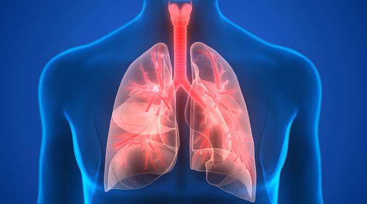
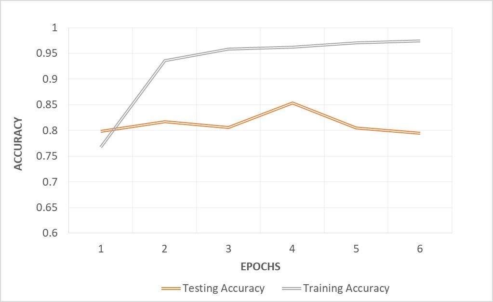

Pneumonia Detection
YOU BETTER CHECK YOURSELF
Upload new File
Background

Pneumonia is an inflammatory condition of the lung affecting primarily the small air sacs
known as alveoli.Typically symptoms include some combination of productive or dry cough, chest pain, fever,
and trouble breathing.Severity is variable.
Pneumonia is usually caused by infection with viruses or bacteria and less commonly by other microorganisms,
certain medications and conditions such as autoimmune diseases. Risk factors include other lung diseases such
as cystic fibrosis, COPD, and asthma, diabetes, heart failure, a history of smoking, a poor ability to cough
such as following a stroke, or a weak immune system.Diagnosis is often based on the symptoms and physical
examination. Chest X-ray, blood tests, and culture of the sputum may help confirm the diagnosis.The disease
may be classified by where it was acquired with community, hospital, or health care associated pneumonia.
Model Architecture
The VGG network architecture was introduced by Simonyan and Zisserman in their 2014 paper, Very Deep Convolutional Networks for Large Scale Image Recognition.
network is characterized by its simplicity, using only 3×3 convolutional layers stacked on top of each other in increasing depth. Reducing volume size is handled by max pooling. Two fully-connected layers, each with 4,096 nodes are then followed by a softmax classifier.
network is characterized by its simplicity, using only 3×3 convolutional layers stacked on top of each other in increasing depth. Reducing volume size is handled by max pooling. Two fully-connected layers, each with 4,096 nodes are then followed by a softmax classifier.

Model Results
Recall of the model is 0.98
Precision of the model is 0.76
